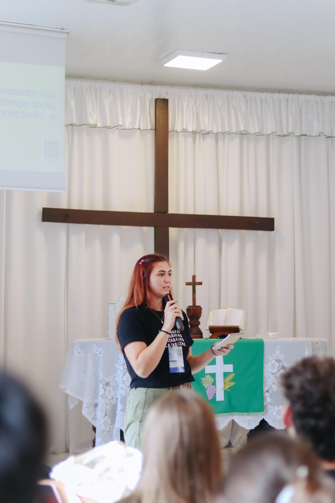
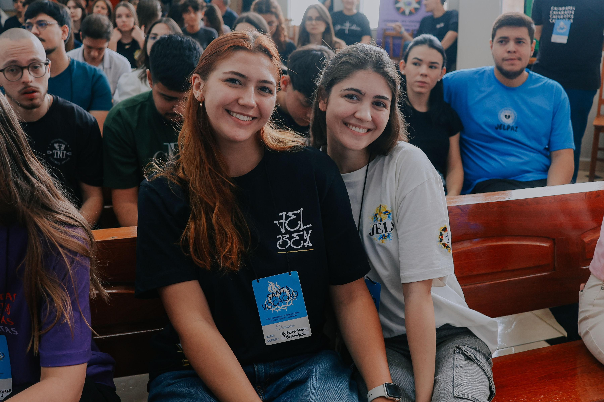
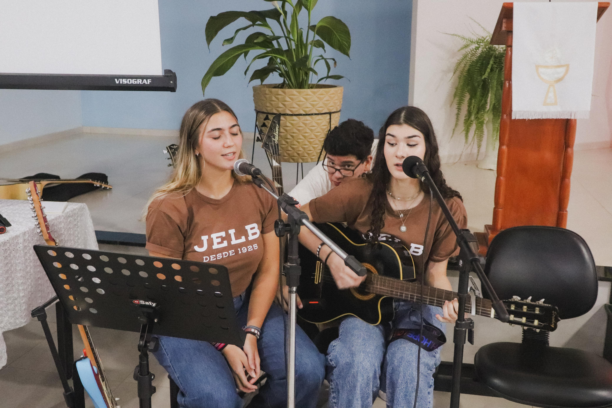

Fiscal Council at the Church Youth
I was born and raised in a Christian household, where attending church every weekend was an important part of my family’s life. As I grew older, I became more involved in the church’s youth group, participating in camps, retreats, and other religious events. These experiences allowed me to develop a strong sense of community, responsibility, and teamwork.


After a few years, I became more actively involved in organizing events through the Cataratas District, a regional group that brings together churches from eight cities in my area. Through this organization, I was given the opportunity to serve on the Fiscal Council, where I became involved in various responsibilities related to event planning and organization. This experience helped me develop important skills such as leadership, organization, communication, and collaboration, while also allowing me to contribute to activities that brought people from different communities together.
